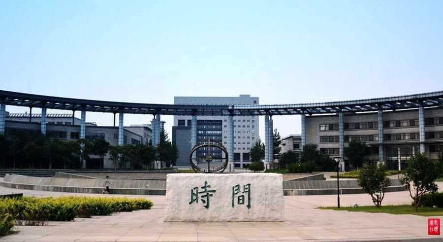
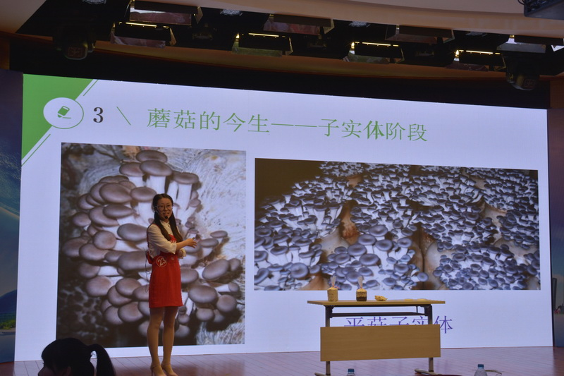
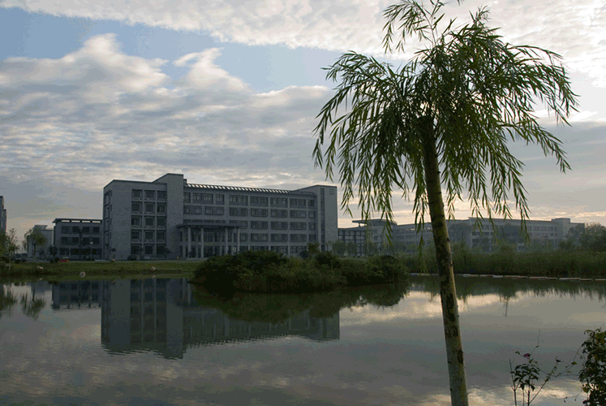
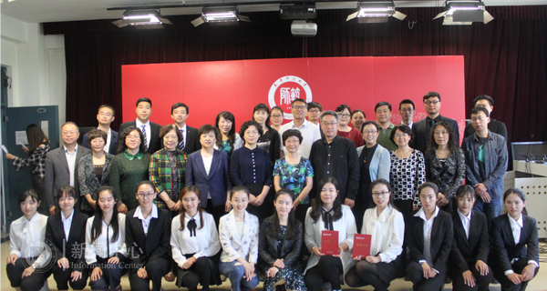
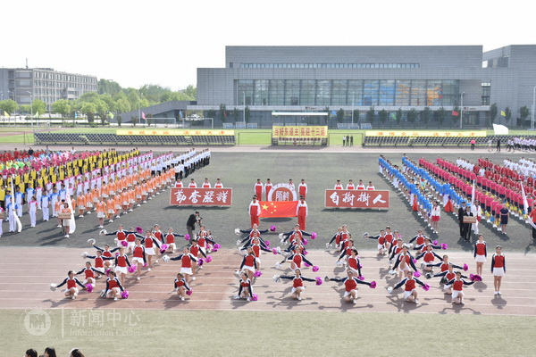
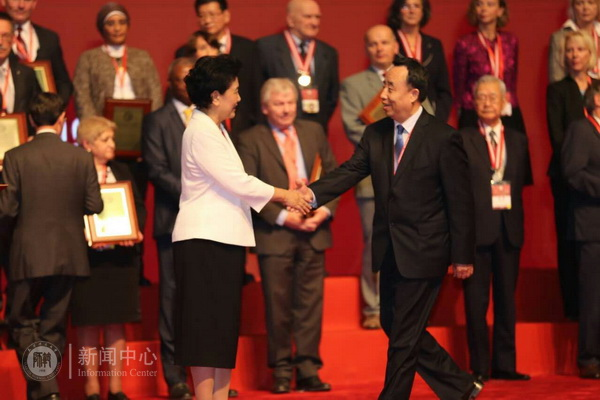
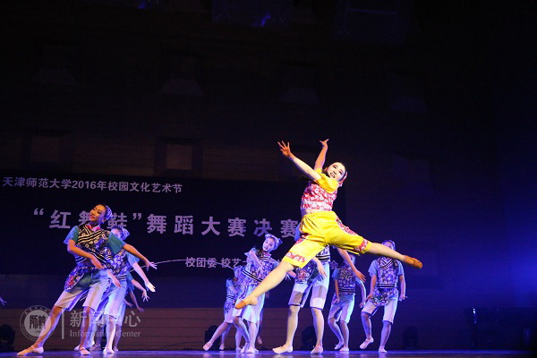

2017年天津市科普讲解大赛决赛在天津自然博物馆开赛，我校生命科学学院2014级本科生韩玉洁在比赛中表现出色，获得天津市“十佳科普大使”的荣誉称号。
来源于：师大News
2017年6月7日

静海区与天津师范大学签订合作办学协议，共建天津师范大学静海附属幼儿园。静海区将以此次合作为契机，依托天津师大在教育品牌、特色打造、教育科研等领域的雄厚实力，全力打造区域标准化优质幼儿园，全面提升学前教育质量和水平，力争把天津师范大学静海附属幼儿园办成天津地区的一流品牌幼儿园。
来源于：城市快报 第5版
2017年6月1日

5月6日，教师教育学院承办的我校2017年学生教学技能大赛决赛圆满收官。上午11时，决赛颁奖仪式在立教楼举行，校党委副书记宁月茹出席并致辞，主办、承办单位负责同志，决赛评审专家组，社会优质教育机构代表以及近200名学生代表共同参加颁奖仪式。
来源于：师大News
2017年5月6日

4月28日上午，天津师范大学第四十五届田径运动会隆重召开。本届运动会分为学生组和教师组，共有981名师生参加33个比赛项目的角逐。
来源于：师大News
2017年4月28日

第十一届全球孔子学院大会12月10日-11日在昆明召开。来自140个国家和地区的中外大学校长、我国驻外使领馆代表、孔子学院代表等2200人参会。教育部部长陈宝生主持开幕式，中共中央政治局委员、国务院副总理、孔子学院总部理事会主席刘延东发表题为“携手并肩开创孔子学院新局面”。
来源于：师大News
2016年12月14日

12月9日 晚，我校双周音乐会、校园文化艺术节“红舞鞋”舞蹈大赛决赛在音乐厅举行。校党委副书记宁月茹、副校长梁福成出席本次活动，相关部门负责同志与各学院师生700余人参加并观看了演出，另有2000余人通过网络直播收看。
来源于：师大News
2016年12月9日